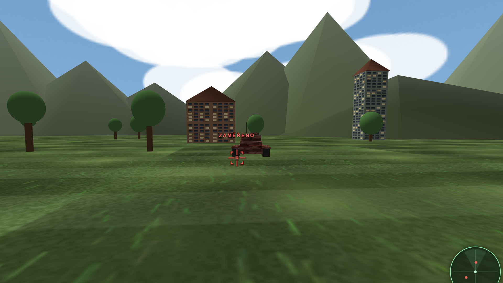
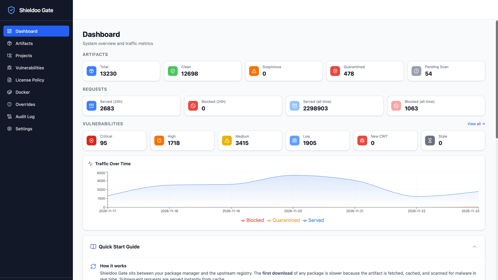
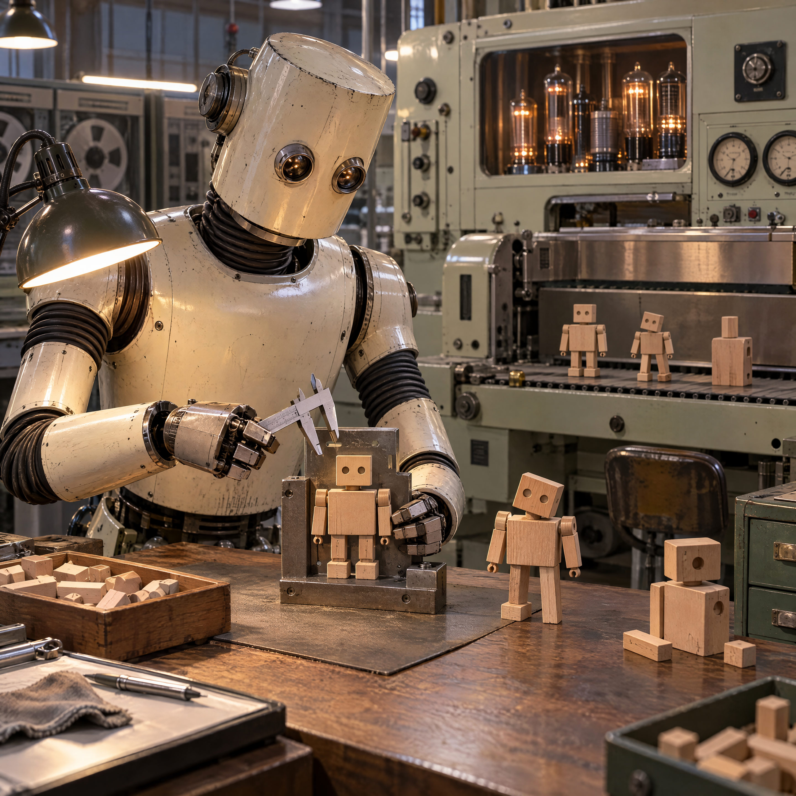
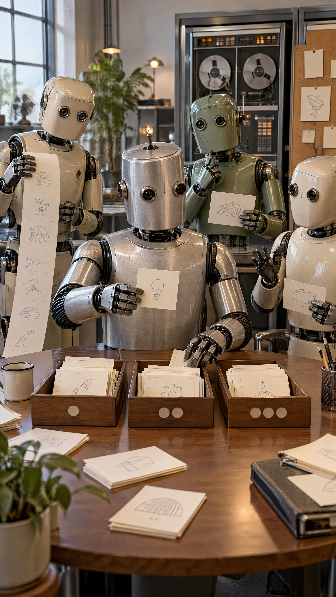
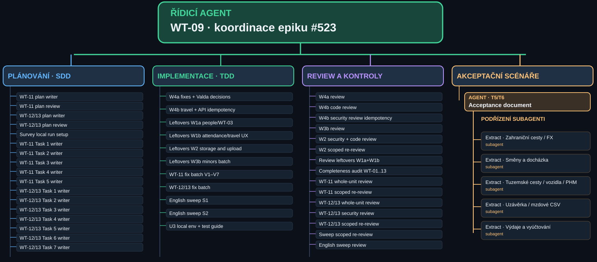
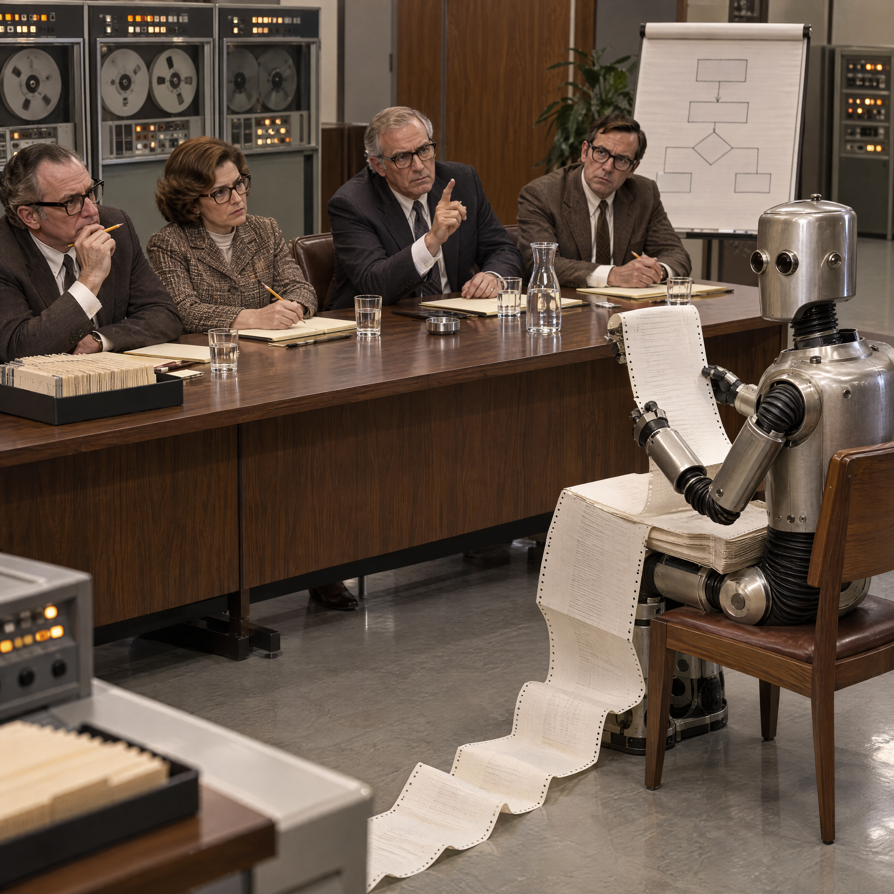
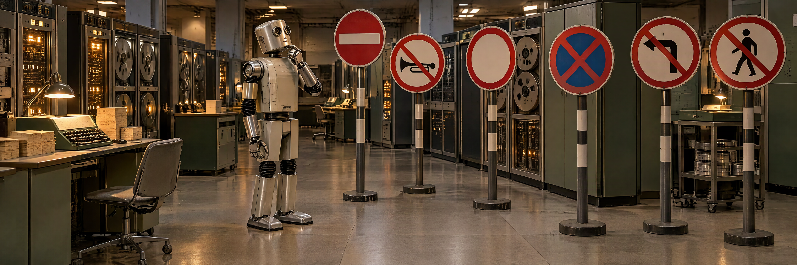
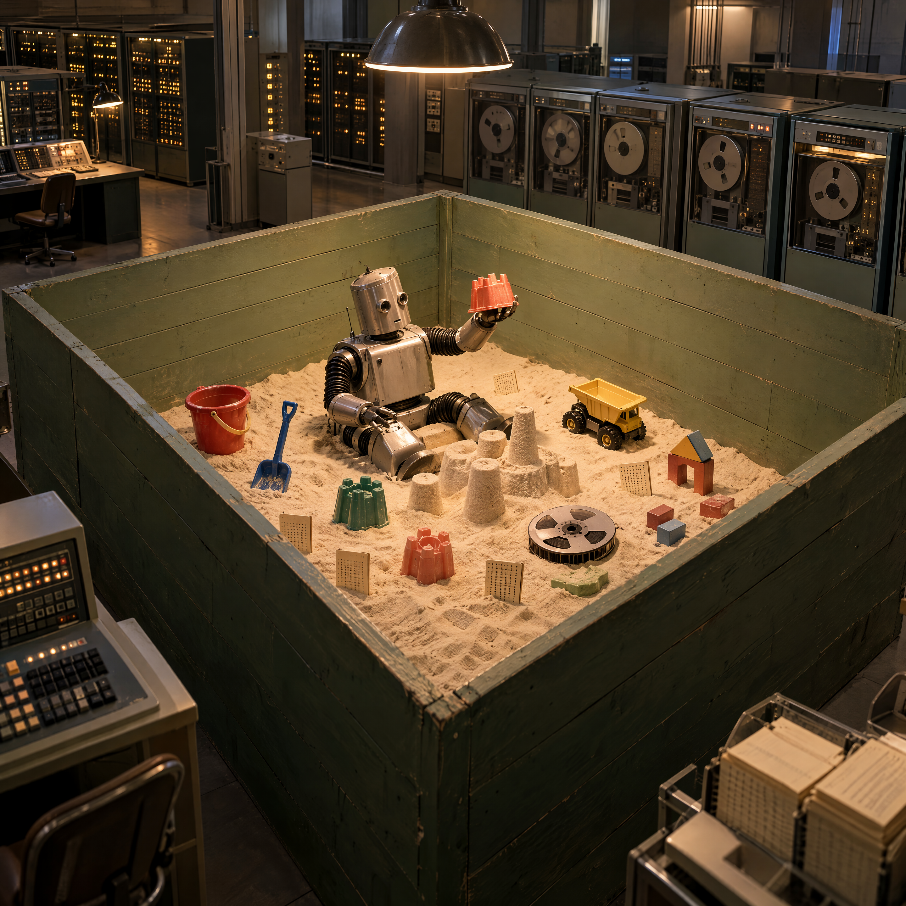
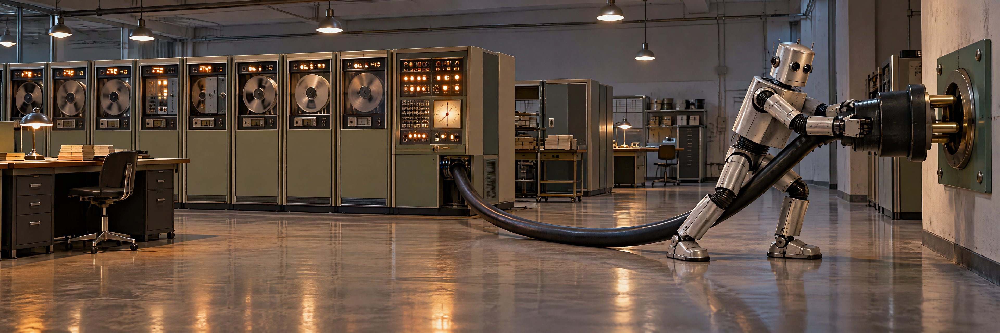

Loop Engineering:
držte laťku, ne agenta za ruku
Od coding agenta k řízeným smyčkám.
Tomáš Kubica, Valdemar Zavadský
Coding agent řeší jen část práce.
Tomáš
Hra jde na jeden zátah. Shieldoo-gate už ne.
Shieldoo-gate: pračka na balíčky, skoro 80 tisíc řádků Go.


Valda
Loop engineering:
definujte cíl, důkaz správnosti a hranice.

Tomáš
Specifikace zpřesňuje, co má agent dodat.
Spec-driven development (SDD)
Valda
PDD dokazuje vlastnosti vůči specifikaci.
Proof-driven development · GitHub Next / Microsoft Research · Rust/Verus
- Formální specifikaceČlověk schvaluje záměr.
- Důkaz verifieremVlastnosti vyplývají z důkazu.
- Další ověřováníTesty mimo rozsah důkazu.
Tomáš
Inner loop: změna se vrací k ověření, dokud neprojde.
Tomáš
Skilly předávají týmové know-how.
Valda
Outer loop propojuje triáž, práci i provoz.

Tomáš
Jeden epic, 15 issues, 49 agentů.
17 plánuje, 11 implementuje, 15 kontroluje, 6 píše akceptaci.

Valda
Nejdřív rozhodnout,
potom delegovat.
ADR, rozsah pravomocí a přijetí změny.
Proberte s agentem architekturu, ADR obsahuje proč, ne jen co.
Tomáš
Agent připraví změnu; tým určí, zda ji přijme.
Připraveno = zelené gates + moje „ano“ k architektuře.

Valda
Hranice musí být výslovné ještě před agentem.

Tomáš
Prompt popisuje hranice; systémy je vynucují.

Tomáš a Valda
Hotovo není merge, ale fungující provoz.
SRE agent hlídá běh a vrací incidenty do další smyčky. Příklad: Azure SRE Agent.
- NasaditZměnu pouštět kontrolovaně.
- SledovatMěřit provoz, SLA a dopad.
- Diagnostikovat a opravitIncident vrací práci do triáže.

Tomáš
Alien Intelligence
Čtyři hypotézy, jak AI možná mění naše zaběhané postupy.
Levnější E2E změní poměr testů, ne potřebu TDD.
Tomáš a Valda
Explicitní Bicep či SQL může být lepší než wrapper.
Tomáš a Valda
Refaktoring může zlevnit víc než duplicita.
Tomáš a Valda
Review se může přesunout k cíli, architektuře a pravidlům.
Tomáš a Valda
Držte laťku,
ne agenta za ruku.